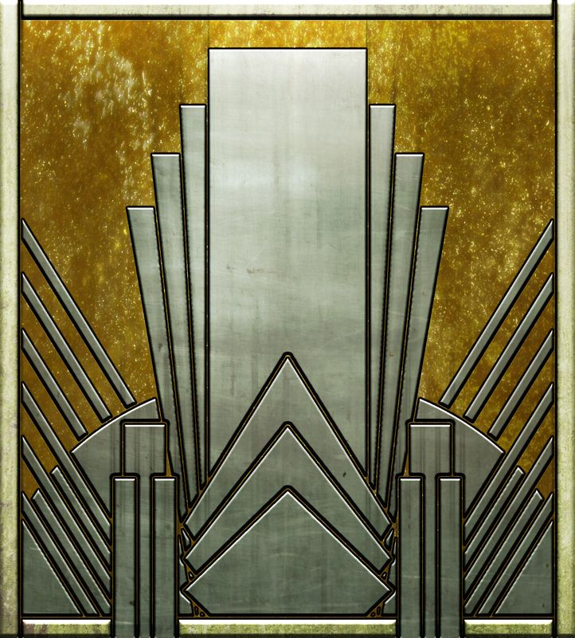
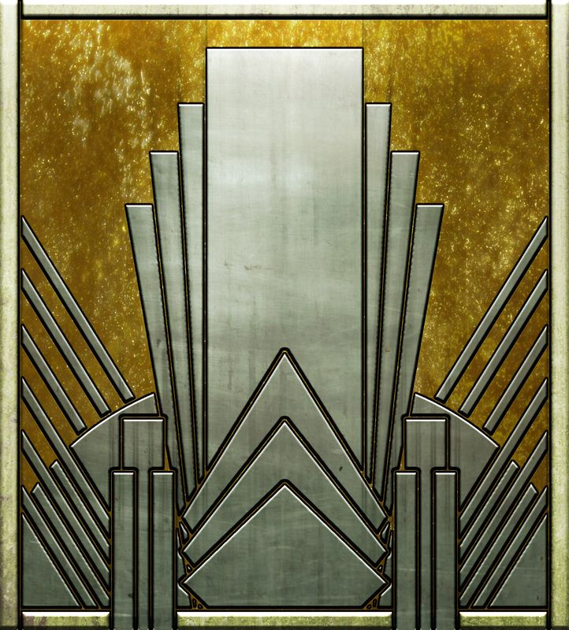

Status
Art Deco-stilen er kort fortalt kendetegnet af slanke, neutrale og metalliske detaljer i kontrast til dæmpede farver og livlige sorte og hvide mønstre. Som tidligere fortalt blev Art Deco ofte defineret som en luksuspræget stilart, som var populær blandt 20’ernes og 30’ernes overklasse. Derfor brugte man ofte metalliske farver som sølv, guld, messing osv, for at give et indtryk af luksus, glamour og rigdom.
Farve kombinationer
Som baggrund blev afdæmpede, pastel og neutrale farver ofte anvendt for at skabe kontrast i baggrunden. Mange brugte neutrale farver som beige, creme o.l. for at give et strømlinet, og moderne udseende. Mens andre fandt det populært at bruge stærke og lyse farver, som lilla, blå, rød, orange, og gul. Her ønskede man at livlige og energiske farver skulle symbolisere velstand ud fra den voksende økonomi der kom i 1920’erne efter 1. verdenskrig. Noget andet der også var meget populært inden for Art Deco, var kontrasten mellem sort og hvid, som eksempel er der mange der kender det klassiske køkkengulv, med sorte og hvide tern. Dette anvendte man da man mente det gav et sofistikeret udtryk. Man kan sige hvad angår farverne inden for Art Deco, er der lagt meget tanke bag hvilket indtryk man ønsker at give udadtil.
 
